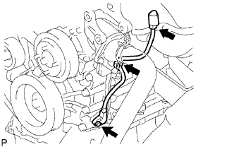
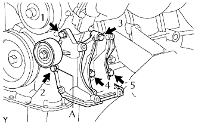
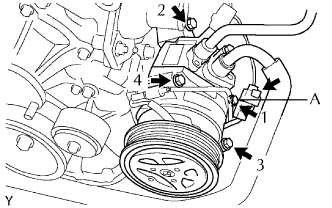
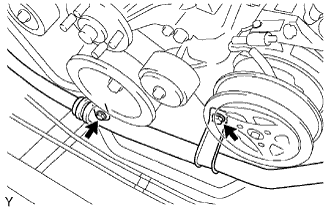

CẢM BIẾN VỊ TRÍ TRỤC KHUỶU > LẮP |
| 1. LẮP CẢM BIẾN VỊ TRÍ TRỤC KHUỶU |
|  |
Bôi một lớp mỏng dầu động cơ vào gioăng chữ O của cảm biến.
Lắp cảm biến bằng bulông.
Lắp giắc vào giắ bắt giắc.
Gắn kẹp dây điện.
Nối giắc của cảm biến.
| 2. LẮP GIÁ BẮT MÁY NÉN ĐIỀU HOÀ NO.1 |
|  |
Lắp tạm thời giá bắt máy nén bằng 5 bulông.
Lắp giá bắt máy nén bằng cách xiết chặt 5 bulông theo thứ tự như trong hình vẽ.
| 3. LẮP CỤM MÁY NÉN ĐIỀU HOÀ |
|  |
Lắp tạm thời máy nén bằng bu lông có dấu A.
Lắp máy nén và xiết chặt hoàn toàn 4 bulông theo thứ tự như trong hình vẽ.
Nối giắc của máy phát.
|  |
Lắp ống hút bằng 2 bulông.
| 4. LẮP ĐAI DẪN ĐỘNG |
 |
Lắp dây đai dẫn động vào các puli trừ puli bộ căng đai.
Dùng một chi tiết có hình lục giác được chỉ ra bởi mũi tên trên hình minh hoạ để dịch chuyển puli bộ căng đai xuống và sau đó lắp đai dẫn động lên puli căng đai.
 |
Sau khi đã lắp một dây đai mới, hãy kiểm tra rằng dấu chỉ báo của bộ căng đai nằm trong vùng A như trong hình vẽ.
| 5. NỐI CÁP VÀO CỰC ÂM ẮC QUY |
| 6. TIẾN HÀNH THIẾT LẬP BAN ĐẦU |
Tiến hành thiết lập ban đầu (Xem trang Kích chuột vào đây).